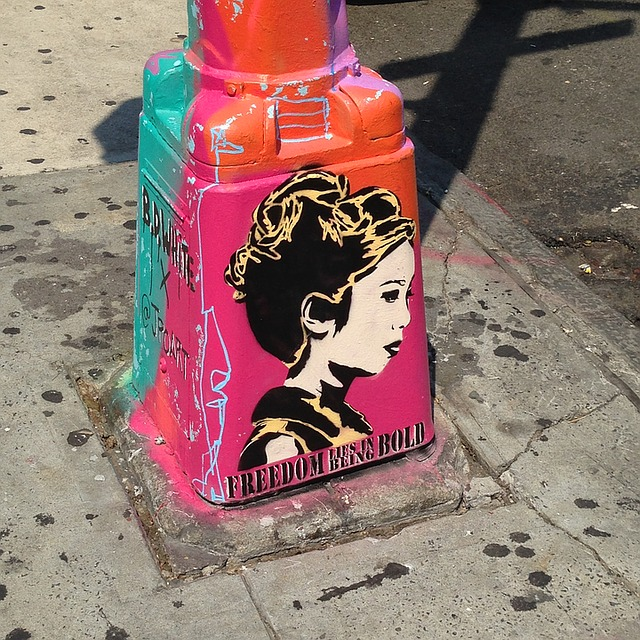
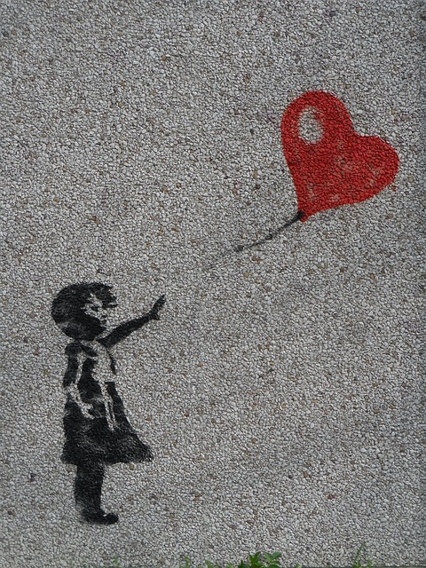
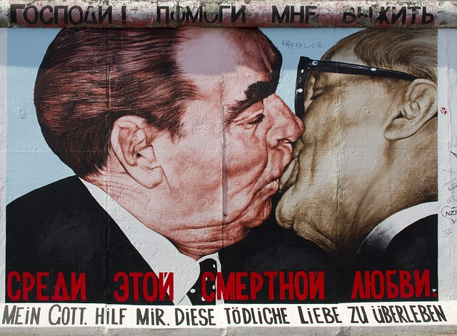

Fillings and Buffing
Graffiti is writing or drawings that have been scribbled, scratched, or painted illicitly on a wall or other surface, often within public view. Graffiti range from simple written words to elaborate wall paintings, and they have existed since ancient times, with examples dating back to Ancient Egypt, Ancient Greece, and the Roman Empire.In modern times, paint (particularly spray paint) and marker pens have become the most commonly used graffiti materials. In most countries, marking or painting property without the property owner's permission is considered defacement and vandalism, which is a punishable crime. Graffiti may also express underlying social and political messages and a whole genre of artistic expression is based upon spray paint graffiti styles. Within hip hop culture, graffiti have evolved alongside hip hop music, b-boying, and other elements. Unrelated to hip-hop graffiti, gangs use their own form of graffiti to mark territory or to serve as an indicator of gang-related activities.[citation needed] Controversies that surround graffiti continue to create disagreement amongst city officials, law enforcement, and writers who wish to display and appreciate work in public locations. There are many different types and styles of graffiti; it is a rapidly developing art form whose value is highly contested and reviled by many authorities while also subject to protection, sometimes within the same jurisdiction.

) In 1955, graffiti began appearing around New York with the words "Bird Lives" but it was not for about one and a half more decades that graffiti started to be noticeable in NYC. Around 1970-71 the center of graffiti culture shifted from Philadelphia to New York City, especially around Washington Heights, where writers such as TAKI 183 and Tracy 168 started to gain media attention. Using a naming convention in which they would add their street number to their nickname, they "bombed" a train with their work, letting the subway take it throughout the city. Bubble lettering was popular among writers from the Bronx, but was replaced with a new "wildstyle", a term coined by Tracy 168 and a legendary original Graffiti crew with over 500 members include Blade, Cope 2, T Kid 170, Cap, Juice 177, and Dan Plasma. Graffiti tags started to grow in style and size. Notable names from that time include DONDI, Lady Pink, Zephyr, Julio 204, STAY HIGH 149, PHASE 2.Graffiti writing was growing competitive and artists desired to see their names seen in all of the city. Around 1974 writers like Tracy 168, CLIFF 159 and BLADE ONE started to create works with more than just their names: they added illustrations, full of scenery and cartoon characters, to their tags, laying the groundwork for the mural-car.The standards from the early 70s continue to evolve, and the late 1970s and early 1980s saw new styles and ideas. As graffiti spread beyond Washington Heights and the Bronx, a graffiti movement was born. Fab 5 Freddy (Friendly Freddie, Fred Brathwaite) was one of the most important graffiti figures of that era. He notes how differences in spray technique and letters between Upper Manhattan and Brooklyn began to merge in the late 70s: "out of that came 'Wild Style'."Fab 5 Freddy is often credited with helping to spread the influence of graffiti and rap music beyond its early foundations in the Bronx, and making links in the mostly white downtown art and music scenes. It was around this time that the established art world started becoming receptive to the graffiti culture for the first time since Hugo Martinez's Razor Gallery in the early 1970s. The growth of graffiti in New York City was helped by its subway system, whose accessibility and interconnectedness facilitated the rise of a community of subway graffiti writers and muralists. It was also aided by the budgetary restraints on New York City, which limited its ability to remove graffiti and perform transit maintenance. Mayor John Lindsay declared the first war on graffiti in 1972, but it would be a while before the city was able and willing to dedicate enough resources to that problem to start impacting the growing subculture.[1][3]

HISTORY OF STREET ART IN THE UK Graffiti & Street Art• Bojan Maric SHARE History of Street Art in the UK world home free email media To paraphrase Blek le Rat, street art could be the most important phenomenon in the history of art itself. Let us consider the fact that there practically isn’t an urban space without pieces of street art. There isn’t a city without a big number of graffiti writers or even urban artists who focus on different kinds of expression. Contemporary urban art owes a big part of its aesthetical achievements to those pioneers of wall writings and train bombing. Everything might have begun with those groups of young people in New York City, but it wasn’t long before this fever covered the isles of Britain… What is more, the reception of the work that had begun in New York was different in every part of the United Kingdom. Manchester, Birmingham, London, Bristol and so on, have started developing distinctive styles which would shape the street art scene of Europe, as well as the rest of the world. Finally, this is not going to be just a story of times gone by and an account of what had been happening with street art, but more a discourse of where street art is going, carried by the power of artistic expression of individuals coming from the cultural space of the United Kingdom… History of Street Art in the UK King Robbo x Banksy Graffiti Comes to England Just like one could imagine, the scene in the making within the cultural space of UK was greatly influenced by the New York scene. Subway art was perceived to be a “bible of street art”, according to London based artist Remi. In those days, at the beginning of the 1980s, car paint was practically the only tool for writers. The late 1980s in England was the time when hip-hop and electro music cultures started emerging on the radio scene. What is interesting, this was the period when the first graffiti was used for advertising. Soon enough, street art advertizing was on the way to become a “common” phenomenon within the culture… But, let us return to graffiti art. Just like in New York city, London wanted to transform its trains. When Martha Cooper’s work came out, writers knew that they were now a part of a bigger phenomenon. Their drive to create, the urge to brake the law by bombing train carts, appeared to be a global one. The beginning of the last decade of the 20th century brought a collaboration between writers and painters of Europe. It could be said that the interaction between London and Paris, the numerous visits of the artists back and forth, influenced the explosion of various innovative approaches to painting and writing. The rest is history in the making…

The Berlin Wall was constructed in 1961 to separate West Berlin and East Berlin during the Cold War. All the differences between the countries made it a perfect place for people to express their opinions, especially on their preferences and dislikes. In the 1980s, the wall was reconstructed and made 14 feet tall. Graffiting on the wall became popular for artists from all over the world and a place where tourists would go and admire the artwork. The West Berlin side of the wall had artwork completely covering the wall, while the East Berlin side was kept blank because people were not permitted to get close enough to the eastside of the wall to paint anything. The Berlin Wall was the largest canvas in the world. Much of the artwork was not claimed by artists and remains anonymous. Because the wall was open to everyone, there were no restrictions on what artists could put on the wall. Over the past 30 years since the collection of artwork was started, much of the controversial artwork has been removed from the wall.[citation needed] Almost all of the wall has been removed and it only exists in places such as Potsdamer Platz, the East Side Gallery, and Bernauer Straße; many segments are now exhibited in other countries; see List of Berlin Wall segments.